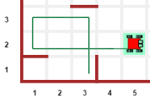
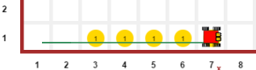
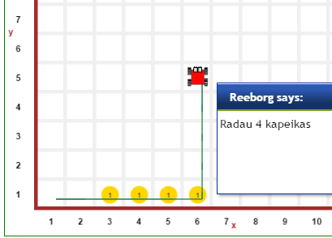
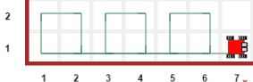
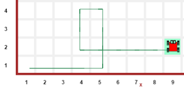
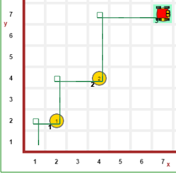
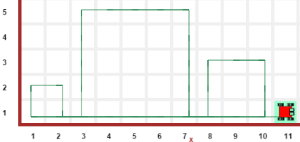

Reeborg.ca aplinka leidžia programuoti robotuko judėjimą lentoje. Ji padeda suprasti programavimo pagrindus: veiksmų seką, kintamuosius, sąlygas, kartojimą, funkcijas. Tie patys principai taikomi ir autonominio Google automobilio ar dronų programavime ;). Čia bus užduotėlės Python’ui.
VEIKSMŲ SEKA
Programos susideda iš veiksmų. Pasinagrinėkite šį pavyzdį. Turime robotuką, kuris supranta komandas:
- move() – paeina langelį
- turn_left() – pasisuka kairėn (dešinėn nemoka)
- take() – paima objektą iš langelio
- put() – padeda objektą
Užduotys:
- veiksmai 1: žetonas ir posūkis
- veiksmai 2: daug žetonų/“kapeikų“ (turėtų užtekti 16 komandų)
- veiksmai 3: trikampiai ir posūkiai (turėtų užtekti 21 komandos)
Patarimas: po kiekvieno trikampio paėmimo palikite tuščią eilutę - veiksmai 4: apeik klūtį (ps.: dešinė = 3 * kairė)
SĄLYGOS
Robotukas moka tikrinti aplinkos sąlygas:
- front_is_clear() – ar priekyje laisva (nėra sienos)?
- at_goal() – ar atėjom į finišo vietą?
- token_here() – ar esam ties žetonu/“kapeika“?
- object_here(„…“) – ar esam ties reikiamu objektu?
Pažiūrėkite sąlygos sakinio pavyzdį, ir atlikite užduotis:
- sąlygos 1: surinkt „kapeikas“ (yra paruoštas ėjimas iki finišo, kuriame reikės sąlygos sakinio surinkti „kapeikoms“);
PS.: Robotas gali startuoti skirtingose vietose, todėl programą pabandykite paleisti kelis kartus.
- sąlygos 2: sienos dilema (if/else),
Turėtų užtekti įrašyti 2 komandas, ir dar vieną simbolį po „else“.
Veikimas atrodytų, pvz, taip: 
- sąlygos 3: sienos ir objektai (2 sąlygos)
Reiks kartojimo su dviejų sąlygų tikrinimu. Užteks prirašyti 5 eilutes, ir kai ką pastumdyti.
KARTOJIMAI ir KINTAMIEJI
Kartojimas yra bene „kiečiausia“ programavimo galimybė, nes leidžia trumpai aprašyti daug (pvz, milijonus) veiksmų. O kompiuteris juos atlieka akimirskniu ir nesiskundžia, kad nuobodu ;). Apšilimui, pažiūrėkite pavyzdį :
- „while“ sakinys labiau įprastas žmonėms
- „for“ sakinys leidžia trumpiau suformuluoti mintį
Atkreipkite dėmesį, kaip keičiamas kartojimo kintamasis abiem atvejais. Užduotys:
- ciklai 1: kvadratas (naudokite kartojimą „while“ arba „for“).
- ciklai 2: žetonų išklotinė (tiesiai)
Reikės 2 ciklų (vienas jums jau parašytas). Naudojantis tikrinimo komandomis, atskiro skaitliuko kol kas nereikia. Užtektų įrašyti 3 eilutes.
Rezultatas bus maždaug toks:  - ciklai 3: žetonų skaičiavimas (su kintamuoju) — pratęsiama ankstesnė idėja, tik jau reiks naudoti skaitliuką. Rezultatas turėtų atrodyti maždaug taip:
 - ciklai 4: spiralė — perdarykite naudodami „while“ arba „for“.
FUNKCIJOS
Funkcijos (komandos) leidžia apibendrinti kelis veiksmus vienu žodžiu (pavadinimu). Su funkcijom galima suskaidyti programas į mažesnius gabaliukus, tada jas lengviau suprasti ir tvarkyti. Pavyzdys.
Sprendimams patikrinti reiks pažiūrėt trajektorijos formą. Sėkmės:
- funkcijos 1: kvad() komanda
sprendimo vaizdas 
- funkcijos 2: „kapeikų“ skaičiavimo funkcija
Rezultatas 
- funkcijos 3: didėjantys laiptai

- funkcija 4: kvad( dydis )
Rezultatas: 